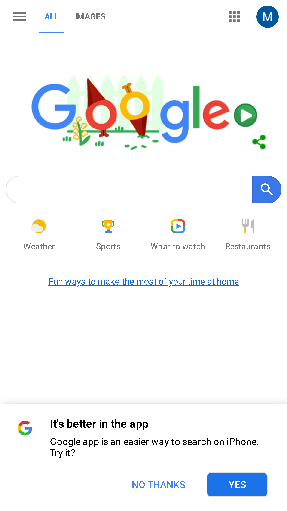

Design Principles Document
Denise Rebollo
The law of proximity
Barnes and nobleBarns and noble
The design of Proximity in this website from Barnes and Noble has grouping of sections. The orders of the books in rows and columns with space around. The design of this webpage is very clean and organized, and everything is close which makes The site more
Visual-Hierarchy
FedExFedex

The Hierarchy that I notice on this website is the order of fedex layout. They have the color contract easy on the eye and they have buttons that are different colors to catch the user eye. The buttons are different colors and
White-Space
Google
The white space that i notice on this website is clean, the website enables objects that stands out to users on the site. It displays the buttons on larger colors and has a simple layout that directs users where they want on the site.